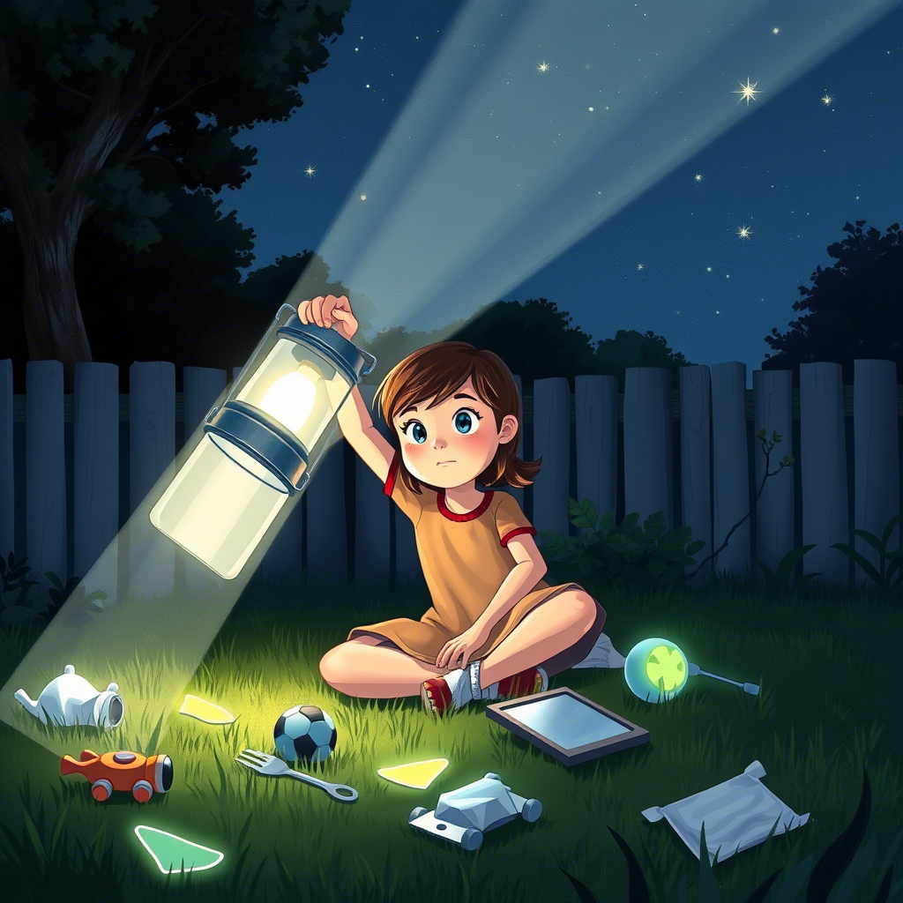
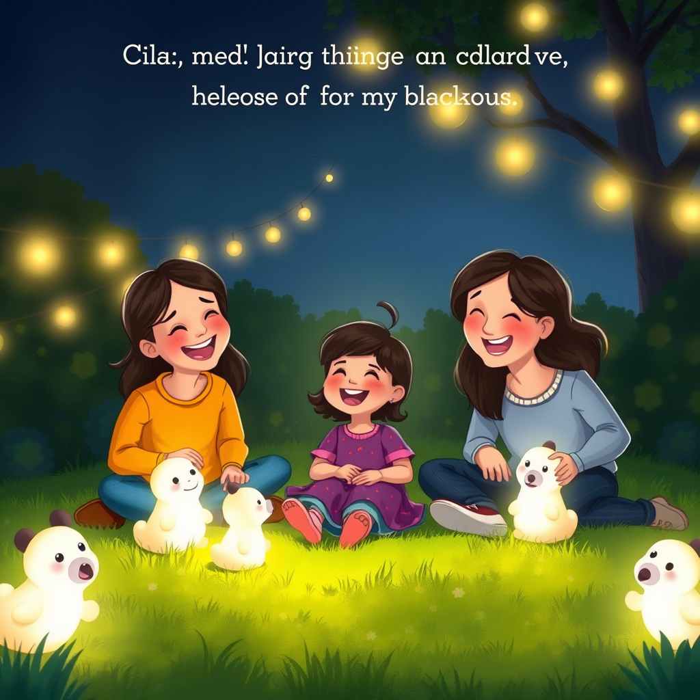
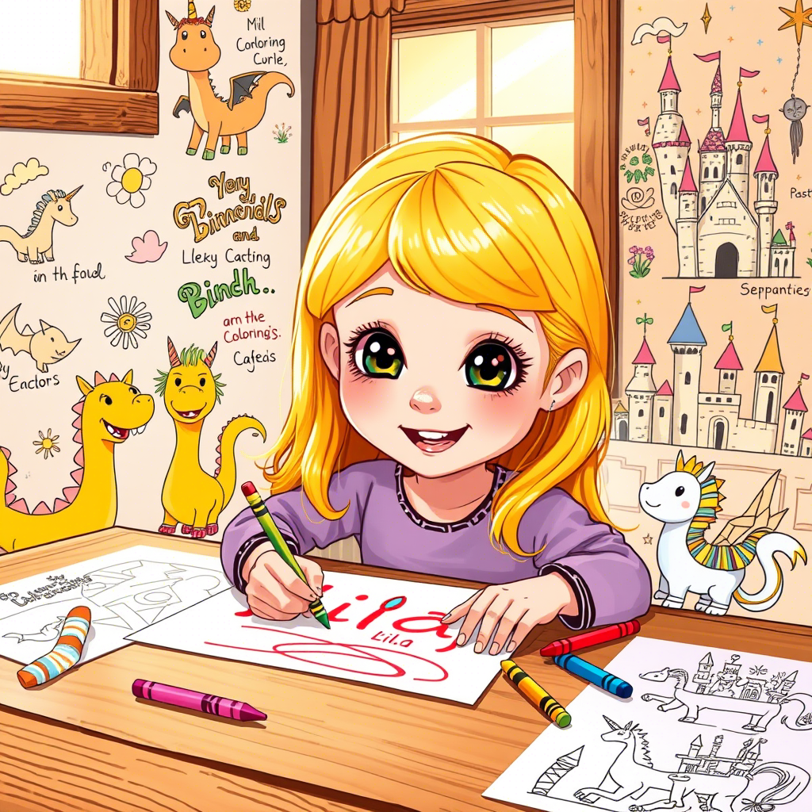
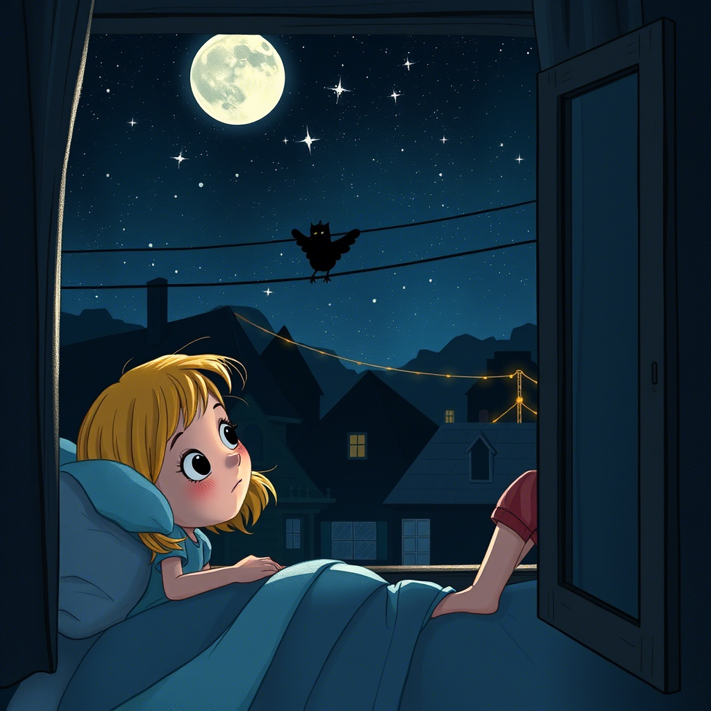

Capítulo 6: El Plan del Abuelo

A la mañana siguiente, el sol entró por la ventana del taller del abuelo y encontró a sus dos inventores favoritos con el cuaderno de tapas de cuero abierto sobre la mesa de trabajo...
"Mira, Lila," dijo el abuelo, señalando un dibujo intrincado del cuaderno. "Este es el Farol Antiluces. Según la leyenda, crea una luz tan pura y tan estable que los Chupaluces no pueden resistirse a acercarse... y cuando se acercan, quedan atrapados en su red de rayos, como moscas en una tela de araña luminosa."
Lila estudió el dibujo con los ojos brillantes. "¿Y podemos construirlo, abuelo?"
El abuelo se rascó la barbilla. "Podemos... con una condición. El Farol necesita una bombilla muy especial, una que ya no se fabrica: la llamaban 'Bombilla de Sol Puro', y brillaba con una luz dorada como la del amanecer. Solo conozco un lugar donde puede haber una." Cerró el cuaderno despacio. "En la Casa de la Luz."
Lila frunció el ceño. "¿Qué es la Casa de la Luz?"
"La vieja subestación eléctrica de La Comunidad," explicó el abuelo. "Donde trabajé de electricista durante cuarenta años. La cerraron hace tiempo, cuando construyeron la nueva central. Pero en su almacén quedaron cajas y cajas de material... y si mi memoria no me falla, una caja de bombillas especiales." Sus ojos sabios brillaron. "Es un edificio viejo y lleno de polvo, y no está permitido entrar. Pero tú y yo sabemos que algunas reglas se hicieron para proteger a la gente... y que a veces hay que romperlas para ayudar a la gente también. ¿Te atreves?"
Lila se puso de pie, con los puños apretados y el corazón latiendo como un tambor. "¡Abuelo, yo me atrevo hasta con el Chispadrón! ¿Cómo no me voy a atrever con una casa llena de polvo?"
El abuelo rio, un sonido cálido que hizo temblar las herramientas colgadas en la pared. "Eso es mi nieta. Prepara la mochila: la Bombilla de Sol Puro no va a encontrarse sola."
Capítulo 7: La Casa de la Luz

La Casa de la Luz era un edificio enorme y gris al borde de La Comunidad, con ventanas altas y rotas y una puerta de hierro que el abuelo abrió con una llave que llevaba en el bolsillo desde hacía treinta años...
Adentro olía a metal viejo, a polvo y a algo más: a historia. Había paneles de interruptores enormes como los de un barco, cables que colgaban como lianas de una selva eléctrica, y cajas apiladas hasta el techo con etiquetas amarillentas.
Mientras el abuelo buscaba la caja de las bombillas con su linterna, Lila descubrió algo que le puso los pelos de punta: en el suelo, cerca de un transformador gigante, había marcas brillantes, como huellas de una criatura hechas de polvo luminoso. Y alrededor del transformador, el polvo estaba limpio, barrido en círculos, como si algo lo lamiera.
"Abuelo," susurró Lila, señalando. "Mira."
El abuelo se acercó, encendió su linterna y estudió las marcas en silencio. Cuando levantó la vista, su cara tenía una expresión que Lila no le había visto nunca: una mezcla de asombro y de algo que podía ser... alivio.
"Lila," dijo, sentándose en un cajón de madera, "yo he sido electricista toda mi vida, y hay algo que los libros no explican. Los Chupaluces no se comen la luz porque sean malos. La luz es su alimento, como el pan para nosotros. Pero fíjate: esta subestación vieja tiene un transformador que zumba mal, que hace parpadear la luz de todo La Comunidad. Y una luz que parpadea, que tiembla, es como comida estropeada para ellos: los atrae y los enferma, los vuelve ansiosos y torpes. El Chispadrón no viene a robar la luz de nuestro pueblo, Lila. Viene a buscar algo que comer... y todo lo que encuentra es una comida que lo envenena."
Lila abrió los ojos de par en par. "¿Entonces el Chispadrón no es el culpable?"
"Es un síntoma," dijo el abuelo, con una sonrisa triste. "La enfermedad es el transformador viejo. La cura es arreglarlo... y darle a los Chupaluces una luz buena que comer. Todo lo demás, la leyenda, el miedo, el 'Chispadrón' que imaginaste... era nuestra forma de explicar algo que no entendíamos." La miró con orgullo. "Pero tú, Lila, entendiste algo que ningún adulto quiso ver: que detrás del monstruo siempre hay una historia. Y las historias, cuando se entienden, dejan de dar miedo."
Capítulo 8: La Trampa de Luz

Esa noche, con la Bombilla de Sol Puro encontrada en el almacén, Lila y el abuelo montaron el Farol Antiluces en el jardín de casa. Y esperaron...
El Farol era hermoso: una jaula de varillas de cobre con la Bombilla de Sol Puro en el centro, rodeada de espejitos que multiplicaban su luz en cien destellos. Cuando lo encendieron, el jardín entero se llenó de una luz dorada y cálida, como un pequeño sol que hubiera decidido vivir entre los geranios.
Lila y el abuelo esperaron escondidos detrás de la puerta, mirando por la rendija. Pasó una hora. Dos horas. Lila empezaba a bostezar cuando, de repente, el aire se movió.
La sombra temblorosa apareció entre los cables, como siempre. Pero esta vez no se desvaneció: se acercó despacio al Farol, con pasos pequeños y cautelosos, y cuando la luz dorada la tocó, algo extraordinario sucedió. La sombra dejó de temblar. Sus bordes se suavizaron, y Lila pudo ver, por fin, lo que siempre había estado ahí: una criatura diminuta, del tamaño de un gato, hecha de penumbra y estrellas, con dos ojos grandes y redondos del color del ámbar.
El Chispadrón se sentó junto al Farol, cerró los ojos y... brilló. Su cuerpo de sombra se llenó de puntitos de luz, como si estuviera bebiendo la luz dorada a sorbitos. Y en ese momento, Lila entendió lo que el abuelo había dicho: no era un monstruo. Era una criatura hambrienta y asustada que por fin había encontrado una comida buena.
Lila salió despacio de su escondite, con las manos abiertas. El Chispadrón abrió los ojos y se tensó, listo para huir, pero Lila se sentó en el suelo, a dos metros del Farol, y no se movió.
"Hola," susurró. "No te voy a hacer daño. No eres un ladrón, ¿verdad? Solo tenías hambre, y la comida del pueblo te enfermaba. Lo siento. Lo siento por haberte llamado Chispadrón y por haberte querido atrapar."
El Chispadrón la miró durante mucho tiempo. Luego, muy despacio, dio un paso hacia ella. Después otro. Y al final, se sentó a su lado, junto al Farol, con la luz dorada brillando sobre los dos, y dejó escapar un sonido suave, como un ronroneo de estrellas.
Lila sonrió, con los ojos llenos de lágrimas de alegría. "Creo que te voy a llamar Chispa," dijo. "Porque no eres una sombra. Eres una chispa que solo necesitaba encontrar su luz."
Capítulo 9: La Fiesta de la Luz

A la mañana siguiente, Lila no se calló ni un segundo. Contó todo a sus padres, que esta vez la escucharon sin sonreír con incredulidad... porque el Chispadrón dormía enrollado en una cesta junto a la Bombilla de Sol Puro, como un gatito de penumbra...
Los padres de Lila se miraron, luego miraron a la criatura, luego miraron a Lila. Y por primera vez, la mamá de Lila dijo las palabras que Lila había esperado toda su vida: "Cariño, tenías razón. La fantasía puede ser real."
El abuelo explicó lo del transformador viejo, y esa misma tarde ocurrió algo que Lila nunca olvidaría: el abuelo convocó a los vecinos a la plaza, y les contó la verdad. No la leyenda del Chupaluces que robaba la luz, sino la verdad verdadera: que la luz del pueblo parpadeaba por un transformador cansado, que eso atraía a unas criaturas que solo tenían hambre, y que para arreglarlo se necesitaban manos, herramientas y una escalera muy larga.
Y la gente de La Comunidad, que llevaba meses quejándose de los apagones, respondió de la única manera que sabe responder un pueblo que recupera la esperanza: con trabajo. El señor Torres trajo su escalera. La señora Méndez trajo café y empanadas. El joven Bruno, que estudiaba electrónica en la ciudad, trajo sus manuales y su multímetro. Y todos juntos, rodeando la vieja subestación, arreglaron el transformador cantando canciones y contando chistes.
Esa noche, cuando el sol se puso, el abuelo hizo la cuenta atrás desde la plaza con la voz ronca de emoción: "¡Tres... dos... uno...!"
Y La Comunidad entera se encendió. Todas las casas, todas las farolas, todos los letreros, a la vez, con una luz firme, brillante y constante. La gente salió a la calle y gritó de alegría. Alguien trajo un equipo de música, otro sacó las luces de navidad guardadas desde el año pasado, y la plaza se convirtió en una fiesta.
En medio de la fiesta, Lila miró el cielo y vio algo que la hizo saltar de alegría: Chispa, el Chispadrón, flotaba sobre los tejados, bebiendo de la luz nueva, que ahora era buena y limpia. Y al beberla, iba dejando tras de sí una estela de destellos, como si el cielo estuviera sembrando de luciérnagas.
Capítulo 10: El Guardián del Pueblo

Las semanas siguientes fueron las más felices de la vida de Lila. Chispa se quedó en La Comunidad, y pronto dejó de ser un secreto para convertirse en el orgullo del pueblo...
Al principio, la gente miraba a Chispa con desconfianza: era una sombra, después de todo, y las sombras dan miedo hasta que les pones nombre. Pero Lila organizó "presentaciones oficiales", y los niños fueron los primeros en atreverse: le llevaron cuencos de agua de luna, le hicieron dibujos, le construyeron una casita de cartón con una bombilla adentro.
Y Chispa respondió a su manera: cada noche, cuando las luces del pueblo se apagaban, daba una vuelta por los tejados y, donde veía una bombilla que parpadeaba o una luz que se apagaba sola, la tocaba con su patita de penumbra y la dejaba encendida de nuevo, firme y constante. El pueblo lo bautizó "el Guardián de la Luz", y la abuela Rosa puso un farol especial en la plaza, siempre encendido, que todos llamaban "la casa de Chispa".
Una tarde, Lila estaba dibujando en su cuaderno la aventura entera: el Chispadrón de los bigotes retorcidos, la Operación Caza al Chispadrón, la Casa de la Luz, el Farol Antiluces, la fiesta. Su mamá se sentó a su lado y le preguntó: "¿Y qué dibujas al final?"
Lila dibujó a Chispa dormido sobre el farol de la plaza, con las estrellas encima. "El final," dijo, "es que el monstruo que nos daba miedo solo quería una casa con luz. Como todos."
Su mamá la abrazó, con los ojos brillantes. "Esa es la historia más bonita que has contado nunca, Lila."
Capítulo 11: La Luz que Crece por Dentro (Final)

Pasó el verano, llegó el otoño, y en La Comunidad la luz ya no se iba nunca. Bueno... casi nunca. Y cuando se iba, una vez cada mucho tiempo, la gente ya no tenía miedo: sacaba velas, salía a la calle y se contaba historias hasta que la luz volvía...
Una noche, Lila estaba en su ventana, mirando las estrellas, cuando Chispa apareció a su lado, flotando suave como siempre. La niña lo miró y sonrió.
"¿Sabes, Chispa?" dijo. "Cuando era pequeña — bueno, más pequeña — pensaba que la oscuridad era el enemigo. Que había que vencerla, apagarla, encerrarla. Pero ahora creo que la oscuridad solo es... el lugar donde se guarda la luz para que no se gaste."
Chispa ronroneó, y una lucecita se encendió en su pecho de sombra. Lila lo acarició con un dedo.
"El abuelo dice que los Chupaluces viven de la luz, y que sin luz no podrían existir. Pero yo creo que es al revés," continuó Lila, pensativa. "Sin oscuridad no sabríamos apreciar la luz. Sin miedo no sabríamos qué es ser valiente. Y sin monstruos... no existirían los amigos invisibles que nos enseñan a mirar más allá de lo que vemos."
Abajo, en la plaza, el farol de Chispa brillaba con su luz dorada. La Comunidad dormía tranquila, con las ventanas encendidas y los sueños a salvo.
Y Lila, la niña que siempre había sabido que la fantasía puede pertenecer a la realidad, cerró su cuaderno, donde la última página decía, con letra grande y redonda: "La luz más importante no es la de las bombillas. Es la que crece por dentro cuando compartes lo que te da miedo con alguien que te quiere."
Desde aquel día, cada vez que la luz de La Comunidad parpadea, los niños sonríen y miran al cielo, buscando una sombra diminuta con ojos de ámbar. Porque saben que Chispa está ahí, guardando la luz... y que las historias más bonitas son las que empiezan con un poco de miedo y terminan con un poco de magia compartida.
✦ Fin ✦
Lo que Lila nos enseña
La fantasía y la realidad no están peleadas: la imaginación nos ayuda a entender el mundo. Y cuando compartimos nuestros miedos con los demás, la oscuridad se convierte en un lugar donde cabe mucha luz.